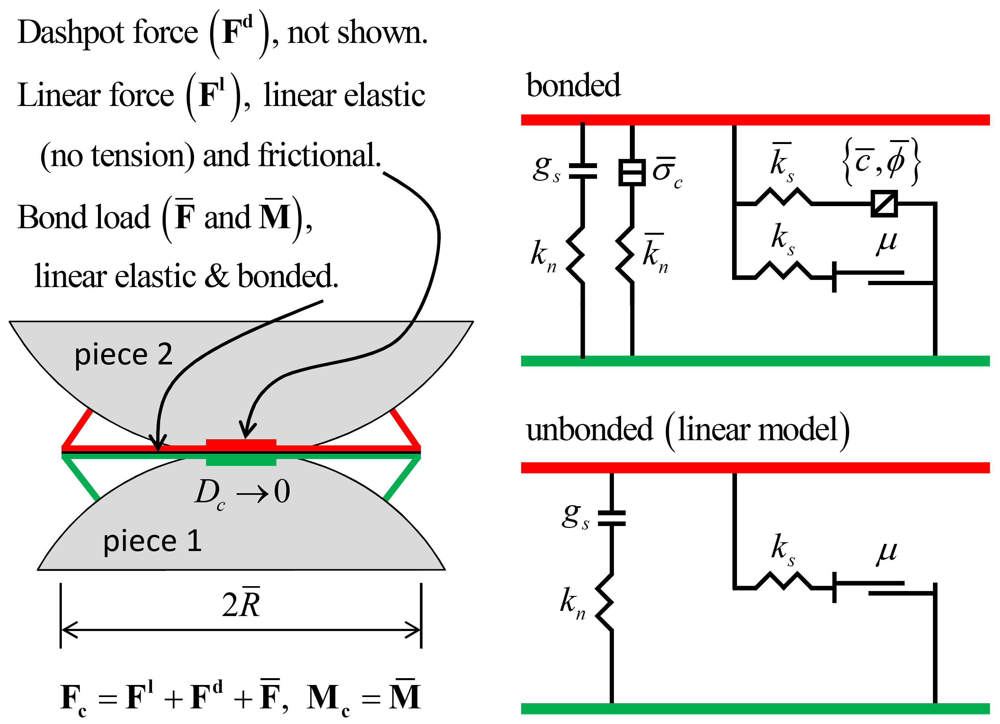
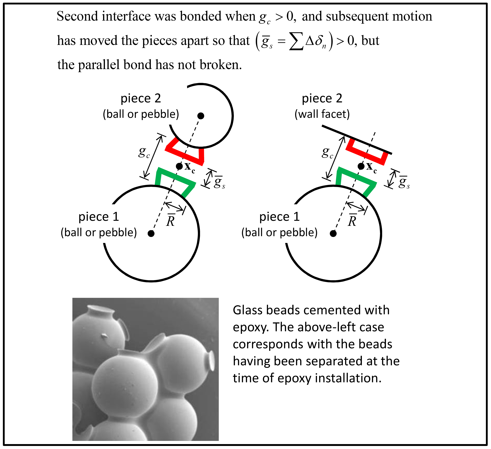
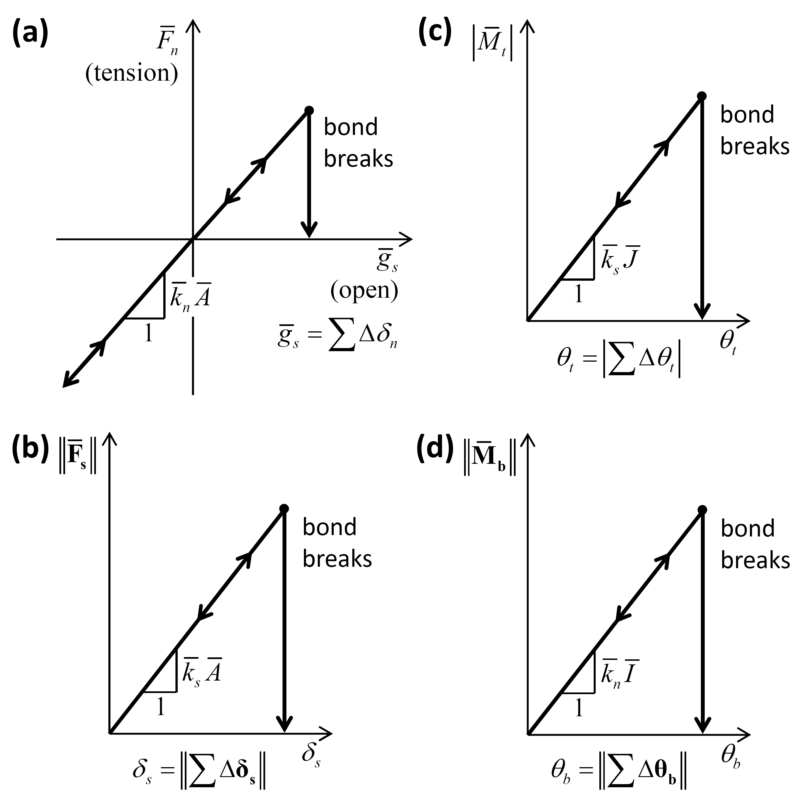
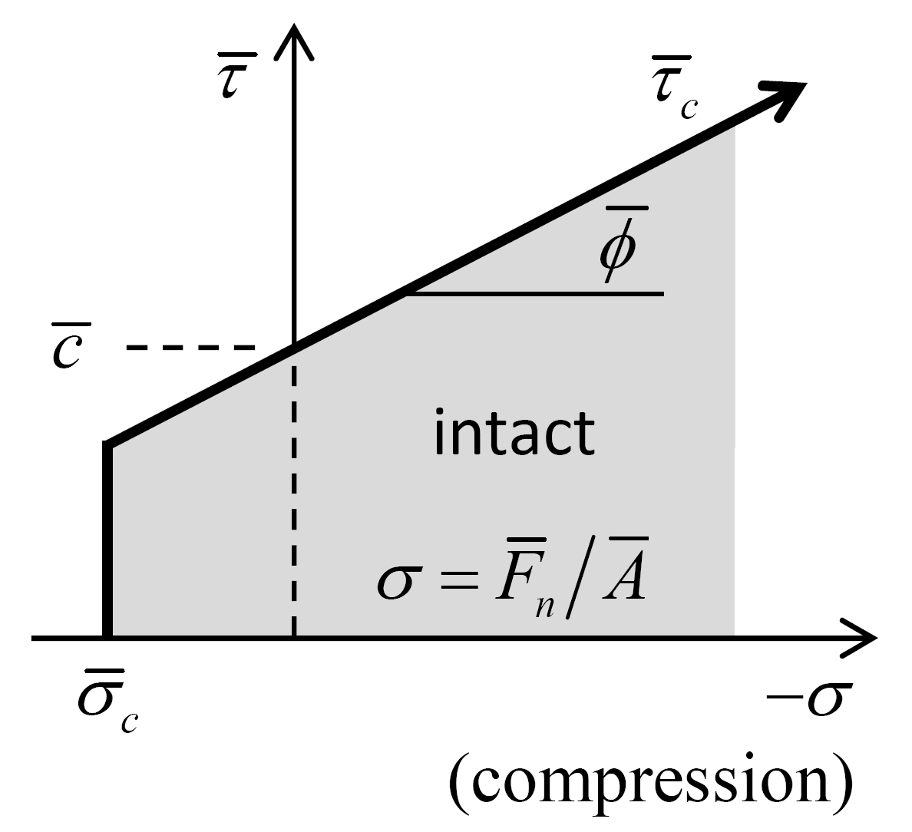

线性平行黏结模型
阻尼器未激活且参考间隙为零的线性平行黏结模型对应于 [Potyondy2004] 中的平行黏结模型。它是一种 基于线性的模型（linear-based model），可安装在球-球和 球-面片接触上，在命令和 FISH 中名称为 linearpbond。
引言
平行黏结提供沉积在两个相互接触片体之间的有限尺寸类水泥材料的力学行为（类似于 图 2（Figure 2） 中黏结玻璃珠的环氧树脂）。平行黏结分量 与线性分量并联作用，并在片体之间建立弹性相互作用。平行黏结的存在并不排除滑动的可能性。 平行黏结可在片体之间传递力和力矩。
平行黏结可视为一组具有恒定法向和剪切刚度的弹性弹簧， 它们均匀分布在位于接触面上、以接触点为中心的 {二维中为矩形；三维中为圆形}横截面上。这些弹簧与线性分量的弹簧 并联作用。平行黏结创建之后发生的接触相对运动， 会在黏结材料内产生力和力矩。该力和力矩作用在两个相互接触片体上， 并可与黏结材料内黏结周边处的最大法向应力和 剪应力相关联。若其中任一最大应力超过其相应的黏结强度，平行黏结就会 破坏，黏结材料及其相应的力、 力矩和刚度一并从模型中移除。
行为概要
线性平行黏结模型提供两个界面的行为：一个传递力的无限小、线性 弹性（无拉伸）摩擦界面，以及一个传递力和力矩的有限尺寸、线弹性、 黏结界面（见 图 1（Figure 1））。第一个界面等效于 线性模型：它不抵抗相对转动，滑动通过施加于剪切力的 Coulomb 限制来实现。第二个界面称为平行黏结，因为 黏结时它与第一个界面并联作用。当第二个界面被黏结时，它抵抗 相对转动，其行为为线弹性，直至超出强度极限、黏结 破坏而使其变为不黏结。当第二个界面未黏结时，它 不承受荷载。未黏结的线性平行黏结模型等效于线性模型。


图 1：阻尼器未激活时线性平行黏结模型的行为与流变组分。
活动-删除准则
若接触已黏结或表面间隙小于或等于零，则具有线性平行黏结模型的接触是活动的。对非活动接触会跳过力-位移定律。表面间隙见 线性（linear） 公式中的 该（this） 图。当参考间隙为零时，第一个界面的名义表面与片体表面重合。第二个界面的名义表面见 图 2（Figure 2）。
力-位移定律
线性平行黏结模型的力-位移定律更新接触力 和力矩：
其中 \(\mathbf{F^{l}}\) 是线性力，\(\mathbf{F^{d}}\) 是阻尼力，\(\overline{\mathbf{F}}\) 是平行黏结力，\(\overline{\mathbf{M}}\) 是平行黏结力矩。线性力和阻尼力按 线性模型（linear model） 更新，而平行黏结中的力和力矩按下文所述更新。
平行黏结力被分解为法向力和剪切力，平行黏结力矩被分解为扭转力矩和弯曲力矩：
其中 \(\overline{F}_{n} > 0\) 表示拉伸。平行黏结剪切力和弯曲力矩位于接触面上，并在接触面坐标系中表示：
当通过 bond 方法创建平行黏结时，两个名义表面之间建立起一个界面，平行黏结力和力矩被清零。平行黏结在这两个名义表面之间提供弹性相互作用，该相互作用在黏结破坏时被移除。每个名义表面与其所属体的片体刚性连接，如 图 2（Figure 2） 所示。平行黏结表面间隙定义为片体表面的累积相对法向位移：
其中 \(\Delta \delta _{n}\) 是“接触解析（Contact Resolution）”一节中 该（this） 公式的相对法向位移增量。


图 2：有限尺寸名义表面（绿色和红色）以及平行黏结球-球（左）和球-面片 （右）接触处的平行黏结表面间隙。（玻璃珠照片取自 [Holt2005]。）
平行黏结力和力矩的力-位移定律由以下步骤组成（见 图 3（Figure 3））。
更新黏结横截面属性：
(5)\[\begin{split}\begin{array}{c} \overline{R} = \overline{\lambda} \left\{ \begin{array}{rl} \min\left( R^{(1)}, R^{(2)} \right), & \mbox{ball-ball} \\ R^{(1)}, & \mbox{ball-facet} \end{array} \right. ,\quad \overline{A} = \left\{ \begin{array}{rl} 2 \bar{R} t, & \mbox{2D $(t = 1)$} \\ \pi \bar{R}^2, & \mbox{3D} \end{array} \right. \\[3mm] \overline{I} = \left\{ \begin{array}{rl} \tfrac{2}{3} t \bar{R}^3, & \mbox{2D $(t = 1)$} \\ \tfrac{1}{4} \pi \bar{R}^4, & \mbox{3D} \end{array} \right. ,\quad \overline{J} = \left\{ \begin{array}{rl} 0, & \mbox{2D} \\ \tfrac{1}{2} \pi \bar{R}^4, & \mbox{3D} \end{array} \right. \end{array}\end{split}\]其中 \(\overline{A}\) 是横截面积，\(\overline{I}\) 是平行黏结横截面的惯性矩（关于过 \(\mathbf{x_{c}}\) 且沿 \(\overline{\mathbf{M}}_\mathbf{b}\) 方向的直线），\(\overline{J}\) 是平行黏结横截面的极惯性矩（关于过 \(\mathbf{x_{c}}\) 且沿 \(\hat{\mathbf{n}}_\mathbf{c}\) 方向的直线）。黏结横截面{二维中为矩形；三维中为圆形}。
更新 \(\overline{F}_n\)：
(6)\[\overline{F}_{n} :=\overline{F}_{n} +\overline{k}_{n} {\kern 1pt} \overline{A}\, \Delta \delta _{n}\]其中 \(\Delta \delta _{n}\) 是“接触解析（Contact Resolution）”一节中 该（this） 公式的相对法向位移增量。
更新 \(\overline{\mathbf{F}}_\mathbf{s}\)：
(7)\[\overline{\mathbf{F}}_\mathbf{s} :=\overline{\mathbf{F}}_\mathbf{s} -\overline{k}_{s} {\kern 1pt} \overline{A}{\kern 1pt} \Delta \pmb{δ} _\mathbf{s}\]其中 \(\Delta \pmb{δ}_\mathbf{s}\) 是“接触解析（Contact Resolution）”一节中 该（this） 公式的相对剪切位移增量。
更新 \(\overline{M}_{t}\)：
(8)\[\begin{split} \overline{M}_t := \left\{ \begin{array}{rl} 0, & \mbox{2D} \\ \overline{M}_t - \overline{k}_s \overline{J} \Delta \theta_t, & \mbox{3D} \end{array} \right.\end{split}\]其中 \(\Delta \theta _{t}\) 是“接触解析（Contact Resolution）”一节中 该（this） 公式的相对扭转转动增量。长度为 \(L\)、两端受大小相等方向相反的扭转力矩作用的受扭弹性圆轴，其扭转刚度 \((k_{t})\) 由 [Crandall1978]（式 6.10）给出：
(9)\[M_{t} =k_{t} \theta _{t} ,\quad k_{t} =\frac{GJ}{L}\]其中 \(G\) 是剪切模量，\(J\) 是横截面积关于轴线的极惯性矩。式 (8) 的力矩-扭转关系由令 \(k_{t} =\overline{k}_{s} {\kern 1pt} \overline{J}\) 得到。
更新 \(\overline{\mathbf{M}}_\mathbf{b}\)：
(10)\[\overline{\mathbf{M}}_\mathbf{b} := \overline{\mathbf{M}}_\mathbf{b} - \overline{k}_{n} {\kern 1pt} \overline{I}{\kern 1pt} \Delta \pmb{θ}_\mathbf{b}\]其中 \(\Delta \pmb{θ}_\mathbf{b}\) 是“接触解析（Contact Resolution）”一节中 该（this） 公式的相对弯曲转动增量。长度为 \(L\)、两端受大小相等方向相反的弯曲力矩作用的弹性对称梁，其弯曲刚度 \(\left(k_{b} \right)\) 由 [Crandall1978]（式 7.14）给出：
(11)\[M_{b} =k_{b} \theta _{b} ,\quad k_{b} =\frac{EI}{L}\]其中 \(E\) 是杨氏模量，\(I\) 是横截面 面积关于梁中性轴的惯性矩。式 (11) 的 力矩-扭转关系由令 \(k_{b} =\overline{k}_{n} {\kern 1pt} \overline{I}\) 得到。
更新平行黏结周边处的最大法向应力（\(\overline{\sigma}\)，\(\overline{\sigma} > 0\) 表示拉伸）和最大剪应力：
(12)\[\begin{split}\begin{array}{l} \overline{\sigma} = \displaystyle\frac{\overline{F}_n}{\overline{A}} + \overline{\beta} \frac{\left\| \overline{\mathbf{M}}_\mathbf{b} \right\| \overline{R}}{\overline{I}} ,\quad \overline{\tau} = \frac{\left\| \overline{\mathbf{F}}_\mathbf{s} \right\|}{\overline{A}} + \left\{ \begin{array}{rl} 0, & \mbox{2D} \\ \overline{\beta} \frac{\left| \overline{M}_t \right| \overline{R}}{\overline{J}}, & \mbox{3D} \end{array} \right. \\[1mm] \mbox{with }\quad \overline{\beta} \in [0, 1]. \end{array}\end{split}\]力矩贡献因子 \(\left( \overline{\beta } \right)\) 在 [Potyondy2011] 中讨论。
施加强度极限（见 图 4（Figure 4））。若超出抗拉强度 极限 \(\left(\overline{\sigma }>\overline{\sigma }_{c} \right)\)，则使黏结发生拉伸破坏：
(13)\[\overline{B}=1,\quad \left\{\overline{F}_{n} ,\overline{F}_{ss} ,\overline{F}_{st} ,\overline{M}_{t} ,\overline{M}_{bs} ,\overline{M}_{bt} \right\}=0.\]若黏结未发生拉伸破坏，则施加抗剪强度极限。抗剪强度 \(\overline{\tau}_{c} = \overline{c} - \sigma \tan \overline{\phi}\)，其中 \(\sigma = \overline{F}_{n} / \overline{A}\) 是作用在平行黏结横截面上的平均法向应力。若超出抗剪强度极限 \((\overline{\tau} > \overline{\tau}_{c})\)，则使黏结发生剪切破坏：
(14)\[\overline{B}=2,\quad \left\{\overline{F}_{n} ,\overline{F}_{ss} ,\overline{F}_{st} ,\overline{M}_{t} ,\overline{M}_{bs} ,\overline{M}_{bt} \right\}=0.\]若黏结已断裂，则触发 bond_break 回调事件。


图 3：平行黏结力和力矩的力-位移定律：(a) 法向力与 平行黏结表面间隙关系；(b) 剪切力与相对剪切位移关系；(c) 扭转 力矩与相对扭转转动关系；(d) 弯曲力矩与相对弯曲转动关系。


图 4：平行黏结的破坏包络。
能量分区
线性平行黏结模型提供四个能量分区：
- 应变能 \(E_{k}\)，储存在线性弹簧中；
- 滑动能量 \(E_{\mu }\)，定义为摩擦滑动耗散的总能量；
- 阻尼器能量 \(E_{\beta }\)，定义为阻尼器耗散的总能量；以及
- 储存在平行黏结弹簧中的黏结应变能 \(\overline{E}_k\)。
| 关键字 | 符号 | 说明 | 范围 | 累积 |
|---|---|---|---|---|
| 线性组： | ||||
energy‑strain |
\(E_{k}\) | 应变能 | \([0.0,+\infty)\) | NO |
energy‑slip |
\(E_{\mu}\) | 滑动耗散的总能量 | \((-\infty,0.0]\) | YES |
| 阻尼器组： | ||||
energy‑dashpot |
\(E_{\beta}\) | 阻尼器耗散的总能量 | \((-\infty,0.0]\) | YES |
| 平行黏结组： | ||||
energy‑epbstrain |
\(\overline{E}_k\) | 黏结应变能 | \([0.0,+\infty)\) | NO |
应变能、滑动能和阻尼器能量的更新与线性模型相同（见 此处（this） 一节）。在黏结破坏之前，滑动能量保持为零。黏结应变能按如下方式更新：
属性
线性平行黏结模型定义的属性在下表中简要列出，供快速查阅；表中各列信息的说明见“接触属性（Contact Properties）”一节。表面可继承属性到接触模型属性的映射也在下文讨论。
| 关键字 | 符号 | 说明 | 类型 | 范围 | 默认 | 可修改 | 可继承 |
|---|---|---|---|---|---|---|---|
| linearpbond | 模型名称 | ||||||
| 线性组： | |||||||
| kn | \(k_n\) | 法向刚度 [力/长度] | FLT | \([0.0,+\infty)\) | 0.0 | YES | YES |
| ks | \(k_s\) | 剪切刚度 [力/长度] | FLT | \([0.0,+\infty)\) | 0.0 | YES | YES |
| fric | \(\mu\) | 摩擦系数 [-] | FLT | \([0.0,+\infty)\) | 0.0 | YES | YES |
| rgap | \(g_r\) | 参考间隙 [长度] | FLT | \(\mathbb{R}\) | 0.0 | YES | NO |
| lin_mode | \(M_l\) | 法向力更新模式 [-] | INT | \(\{0,1\}\) | 0 | YES | NO |
| \(\;\;\;\;\;\;\begin{cases} \mbox{0: update is absolute} \\ \mbox{1: update is incremental} \end{cases}\) | |||||||
| emod | \(E^*\) | 有效模量 [力/面积] | FLT | \([0.0,+\infty)\) | 0.0 | NO | N/A |
| kratio | \(\kappa^*\) | 法向与剪切刚度比 [-] | FLT | \([0.0,+\infty)^*\) | 0.0\(^*\) | NO | N/A |
| \(\kappa^* \equiv \frac{k_n}{k_s}\) | |||||||
| lin_slip | \(s\) | 滑动状态 [-] | BOOL | {false,true} | false | NO | N/A |
| \(\;\;\;\;\;\;\begin{cases} \mbox{true: slipping} \\ \mbox{false: not slipping} \end{cases}\) | |||||||
| lin_force | \(\mathbf{F^l}\) | 线性力（接触面坐标系） | VEC | \(\mathbb{R}^3\) | \(\mathbf{0}\) | YES | NO |
| \(\left( -F_n^l,F_{ss}^l,F_{st}^l \right) \quad \left(\mbox{2D model: } F_{ss}^l \equiv 0 \right)\) | |||||||
| user_area | \(A\) | 恒定面积 [长度*长度] | FLT | \((0.0,+\infty)\) | 0.0 | YES | NO |
| 阻尼器组： | |||||||
| dp_nratio | \(\beta_n\) | 法向临界阻尼比 [-] | FLT | \([0.0,1.0]\) | 0.0 | YES | NO |
| dp_sratio | \(\beta_s\) | 剪切临界阻尼比 [-] | FLT | \([0.0,1.0]\) | 0.0 | YES | NO |
| dp_mode | \(M_d\) | 阻尼器模式 [-] | INT | {0,1,2,3} | 0 | YES | NO |
| \(\;\;\;\;\;\;\begin{cases} \mbox{0: full normal & full shear} \\ \mbox{1: no-tension normal & full shear} \\ \mbox{2: full normal & slip-cut shear} \\ \mbox{3: no-tension normal & slip-cut shear} \end{cases}\) | |||||||
| dp_force | \(\mathbf{F^d}\) | 阻尼力（接触面坐标系） | VEC | \(\mathbb{R}^3\) | \(\mathbf{0}\) | NO | NO |
| \(\left( -F_n^d,F_{ss}^d,F_{st}^d \right) \quad \left(\mbox{2D model: } F_{ss}^d \equiv 0 \right)\) | |||||||
| 平行黏结组： | |||||||
| pb_rmul | \(\overline{\lambda}\) | 半径乘子 [-] | FLT | \((0.0,+\infty)\) | 1.0 | YES | NO |
| pb_kn | \(\overline{k}_n\) | 法向刚度 [应力/位移] | FLT | \([0.0,+\infty)\) | 0.0 | YES | NO |
| pb_ks | \(\overline{k}_s\) | 剪切刚度 [应力/位移] | FLT | \([0.0,+\infty)\) | 0.0 | YES | NO |
| pb_mcf | \(\overline{\beta}\) | 力矩贡献因子 [-] | FLT | \([0.0,1]\) | 1.0 | YES | NO |
| pb_ten | \(\overline{\sigma}_c\) | 抗拉强度 [应力] | FLT | \([0.0,+\infty)\) | 0.0 | YES | NO |
| pb_coh | \(\overline{c}\) | 黏聚力 [应力] | FLT | \([0.0,+\infty)\) | 0.0 | YES | NO |
| pb_fa | \(\overline{\phi}\) | 摩擦角 [度] | FLT | \([0.0,90.0)\) | 0.0 | YES | NO |
| pb_state | \(\overline{B}\) | 黏结状态 | INT | {0,1,2,3} | 0 | NO | NO |
| \(\;\;\;\;\;\;\begin{cases} \mbox{0: unbonded} \\ \mbox{1: unbonded & broke in tension} \\ \mbox{2: unbonded & broke in shear} \\ \mbox{3: bonded} \end{cases}\) | |||||||
| pb_radius | \(\overline{R}\) | 黏结半径 [长度] | FLT | \((0.0,+\infty)\) | N/A | 否（由 \(\overline{\lambda}\) 设置） | NO |
| pb_emod | \(\overline{E}^{*}\) | 黏结有效模量 [应力] | FLT | \([0.0,+\infty)\) | 0.0 | NO | N/A |
| pb_kratio | \(\overline{\kappa }^{*}\) | 黏结法向与剪切刚度比 | FLT | \([0.0,+\infty)^{*}\) | 0.0 | NO | N/A |
| \(\overline{\kappa}^* \equiv \frac{\overline{k}_n}{\overline{k}_s}\) | |||||||
| pb_shear | \(\overline{\tau }_{c}\) | 黏结抗剪强度 [应力] | FLT | \([0.0,+\infty)\) | 0.0 | 否（由 \(\overline{c}\) 和 \(\overline{\sigma}_c\) 设置） | N/A |
| pb_sigma | \(\overline{\sigma }\) | 黏结周边处的法向应力 [应力] | FLT | \([0.0,+\infty)\) | 0.0 | NO | N/A |
| pb_tau | \(\overline{\tau }\) | 黏结周边处的剪应力 [应力] | FLT | \([0.0,+\infty)\) | 0.0 | NO | N/A |
| pb_force | \(\overline{\mathbf{F}}\) | 平行黏结力（接触面坐标系） | VEC | \(\mathbb{R}^3\) | \(\mathbf{0}\) | YES | NO |
| \(\left( -\overline{F}_n,\overline{F}_{ss},\overline{F}_{st} \right) \quad \left(\mbox{2D model: } \overline{F}_{ss} \equiv 0 \right)\) | |||||||
| pb_moment | \(\overline{\mathbf{M}}\) | 平行黏结力矩（接触面坐标系） | VEC | \(\mathbb{R}^3\) | \(\mathbf{0}\) | YES | NO |
| \(\left( \overline{M}_t,\overline{M}_{bs},\overline{M}_{bt} \right) \quad \left(\mbox{2D model: } \overline{M}_{t} \equiv \overline{M}_{bt} \equiv 0 \right)\) | |||||||
| \(^*\) 按惯例，若相应的法向或剪切刚度为零，则 \(\kappa^*\) 和 \(\overline{\kappa }^{*}\) 等于零。 | |||||||
注意
修改接触模型的力不会改变已累积到体上的力。因此，对 \(\mathbf{F^l}\)、 \(\overline{\mathbf{F}}\) 或 \(\overline{\mathbf{M}}\) 的任何改动可能只在下一个力-位移计算中生效。 当 \(M_l = 0\) 时，线性力的法向分量会在下一个力-位移 计算中被自动覆盖。
表面属性继承
线性刚度 \(k_n\) 和 \(k_s\) 以及摩擦系数 \(\mu\) 可以从 接触块体继承。属性继承的详情见 linear 公式中的此（this）节。
方法
| 方法 | 参数 | 符号 | 类型 | 范围 | 默认 | 说明 | |
|---|---|---|---|---|---|---|---|
| 线性组： | |||||||
| area | 把 user_area 设为该面积 | |||||||
| deformability | 设置可变形性 | |||||||
| emod | \(E^*\) | FLT | \([0.0,+\infty)\) | N/A | 有效模量 | ||
| kratio | \(\kappa^*\) | FLT | \([0.0,+\infty)^*\) | N/A | 法向与剪切刚度比 | ||
| 平行黏结组： | |||||||
| pb_deformability | 设置黏结可变形性 | ||||||
| emod | \(\overline{E}^*\) | FLT | \([0.0,+\infty)\) | N/A | 黏结有效模量 | ||
| kratio | \(\overline{\kappa}^*\) | FLT | \([0.0,+\infty)^*\) | N/A | 黏结法向与剪切刚度比 \(\overline{\kappa}^* \equiv \frac{\overline{k}_n}{\overline{k}_s}\) | ||
| bond | 若 \(g_c \in G\) 则黏结该接触 | ||||||
| gap | \(G\) | VEC2 | \(\mathbb{R}^2\) | \((-\infty,0]\) | 间隙区间 | ||
| unbond | 若 \(g_c \in G\) 则解除接触的黏结 | ||||||
| gap | \(G\) | VEC2 | \(\mathbb{R}^2\) | \((-\infty,0]\) | 间隙区间 | ||
| \(^*\) 按惯例，把 \(\kappa^*\) 和 \(\overline{\kappa }^{*}\) 设为零会把相应的剪切刚度设为零，但不改变相应的法向刚度。 | |||||||
面积
通过当前接触面积设置 user_area 属性。此操作意味着接触面积保持不变，且不随片体尺寸/几何的变化而改变。为了按该面积重新计算刚度，随后应调用 deformabilty 和/或 pb_deformability 方法。
可变形性
该方法的细节见 线性（linear） 公式中的 该（this） 一节。
pb_deformability
第一个界面提供的可变形性可用 deformability 方法指定。平行黏结提供的附加可变形性可用 pb_deformability 方法指定，该方法设定
该表达式中的第一项由法向刚度等于 线性模型（linear model） 公式中 该（this） 图所示材料体积的轴向刚度而得到。
黏结
若片体之间的接触间隙处于黏结间隙区间内，则通过黏结第二个界面创建平行黏结。若未指定间隙，则当片体相互重叠时黏结第二个界面。可用 gap 关键字指定一个值，对应于最大间隙。可以通过在 接触模型赋值表（CMAT）（Contact Model Assignment Table (CMAT)） 的 contact cmat default 命令中为 proximity 指定 \(g_b\)，确保所有片体之间间隙小于指定黏结间隙 \((g_b)\) 的接触都存在。若第二个界面被黏结，则平行黏结的力、力矩和表面间隙都被清零。
解除黏结
若各块之间的接触间隙位于黏结间隙区间内，则通过解除第二界面黏结来移除平行黏结。若未指定间隙，则当各块重叠时解除第二界面黏结。可用 gap 关键字指定单个值（对应最大间隙）。若第二界面被解除黏结，则黏结状态变为未黏结 \((\overline{B}=0)\)。平行黏结力与力矩不受影响，将在下一循环中更新。
回调事件
| 事件 | 数组槽位 | 值类型 | 范围 | 说明 |
|---|---|---|---|---|
| contact_activated | 接触已变为活动 | |||
| 1 | C_PNT | N/A | 接触指针 | |
| 线性组： | ||||
| slip_change | 滑动状态已改变 | |||
| 1 | C_PNT | N/A | 接触指针 | |
| 2 | INT | {0,1} | 滑动变化模式 | |
| \(\;\;\;\;\;\;\begin{cases} \mbox{0: slip has initiated} \\ \mbox{1: slip has ended} \end{cases}\) | ||||
| 平行黏结组 | ||||
| bond_break | 黏结已破坏 | |||
| 1 | C_PNT | N/A | 接触指针 | |
| 2 | INT | {1,2} | 破坏模式 | |
| \(\;\;\;\;\;\;\begin{cases} \mbox{1: failed in tension} \\ \mbox{2: failed in shear} \end{cases}\) | ||||
| 3 | FLT | \([0.0,+\infty)\) | 破坏强度 [力] （按破坏模式取 \(\overline{\sigma }_{c}\) 或 \(\overline{\tau }_{c}\)） | |
| 4 | FLT | \([0.0,+\infty)\) | 破坏开始时黏结应变能 \(\overline{E}_k\) | |
使用与验证示例
教程示例“生成黏结集合体（Generating a Bonded Assembly）”演示了线性平行黏结模型的使用。
验证问题“端部受载悬臂梁（Tip-Loaded Cantilever Beam）”使用线性平行黏结接触模型模拟悬臂梁，并将其受载的力学响应 与解析解进行比较。
示例“岩石试验（Rock Testing）”把平行黏结材料在典型 实验室试验条件（无侧限压缩和直接拉伸试验）下的响应与 平节理材料（flat-jointed material） 的响应进行比较。
教程示例“基质中的包裹体（Inclusions in a Matrix）”也使用线性平行黏结模型。其目的是说明如何创建具有不同力学性质的材料区域。
教程示例“合成岩体（SRM）试样制作（Creation of a Synthetic Rock Mass (SRM) Specimen）”和“断层滑动（Slip on a Fault）”演示了如何在平行黏结材料中插入界面，并使用 光滑节理模型（Smooth-Joint Model） 进行建模。
模型概要
线性平行黏结接触模型方法的字母顺序列表见此处（here）。 线性平行黏结接触模型属性的字母顺序列表见此处（here）。
参考文献
| [Crandall1978] | (1, 2) Crandall, S.H., N.C. Dahl and T.J. Lardner. “An Introduction to the Mechanics of Solids, Second Edition,” New York: McGraw-Hill Book Company. |
| [Holt2005] | Holt, R.M., J. Kjølass, I. Larsen, L. Li, A. Gotusso Pillitteri and E.F. Sønstebø. “Comparison Between Controlled Laboratory Experiments and Discrete Particle Simulations of the Mechanical Behavior of Rock,” Int. J. Rock Mech. Min. Sci., 42, 985-995. |
| [Potyondy2011] | Potyondy, D.O. “Parallel-Bond Refinements to Match Macroproperties of Hard Rock,” in Continuum and Distinct Element Numerical Modeling in Geomechanics 2011 (Proceedings of Second International FLAC/DEM Symposium, Melbourne, Australia, 14–16 February 2011), pp. 459–465. D. Sainsbury, R. Hart, C. Detournay and M. Nelson, Eds. ISBN 978-0-9767577-2-6. Minneapolis: Itasca International. |
| 这些内容对您有帮助吗？… 版权与免责声明 |
FLAC3D © 2019, Itasca | 原文更新于 2020 年 10 月 8 日 |